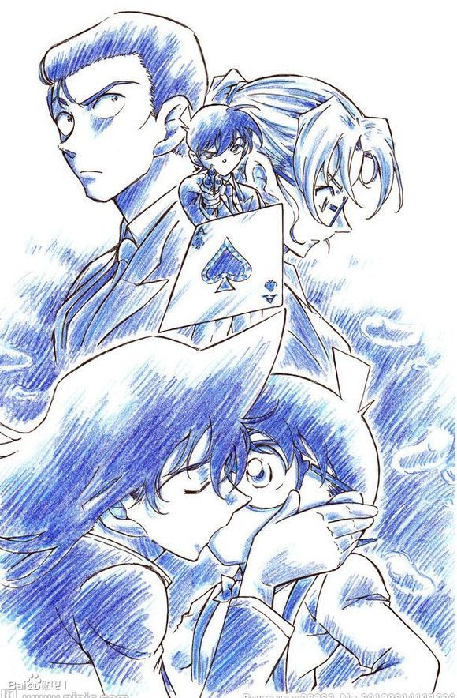
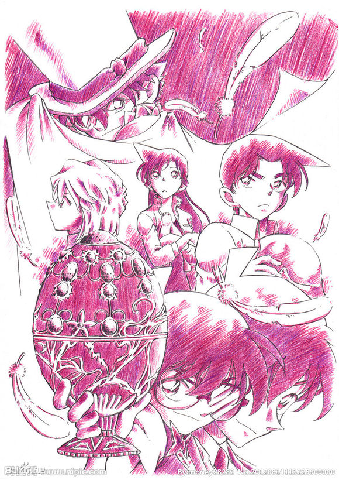
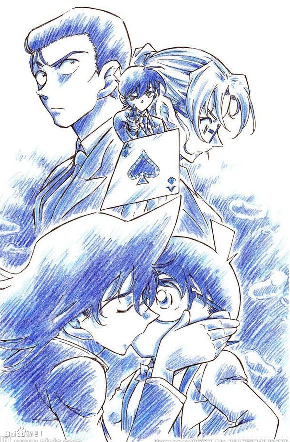
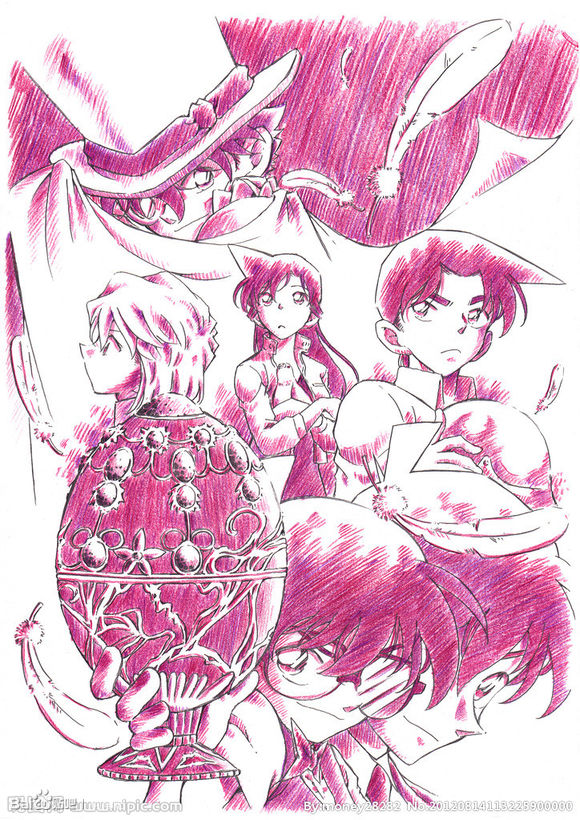

1963年6月21日出生于日本鸟取县室 血型为B型，日本漫画家
高中生侦探工藤新一与毛利兰在游乐园游玩时发现两个行动诡异的黑衣男子，便跟踪他们，不料被灌下一种叫"APTX4869"的神秘毒药，然而因为药物副作用，新一的身体竟回到孩童状态。为不使周围的人受到牵连，他化名为"江户川柯南"，寄住在毛利兰家中，解决了许多案件，并一直寻找着黑衣组织的人的下落。
因为青山刚昌是学西洋画出身，所以其创作的人物造型非常唯美飘逸，常常都有着秋水大眼和尖挺鼻子。他的（推理作品）故事情节的编排也不局限于传统的日本推理模式，那些精彩的街头追逐场面，以及稀奇古怪的发明，颇有日版"007"的味道。（《环球人物》2015年第27期 评） 青山刚昌在作画以外的日子，喜欢看看电影和小说，这些休闲方式与漫画创作密不可分。也许正是因为他对自己作品的爱，使得从小孩到大人都被吸引成为他的粉丝。（Cinematoday 评）
 《M1》
《M2》
《M3》
《M1》
《M2》
《M3》
 《M4》
《M4》